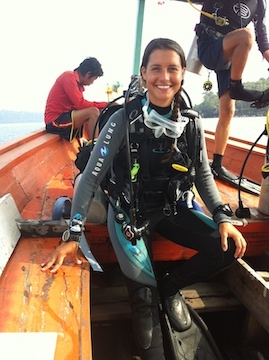

|  | Elena BOLLATI
Research Fellow
Currently a postdoc at University of Copenhagen
Twitter: @ElenaBollati |
Academic history:
PhD University of Southampton, UK (2018).
MSci University of Southampton, UK (2013).
Research interests:
Molecular and physiological mechanisms of stress response in corals
Functions and applications of coral fluorescent proteins
Using optical techniques to monitor coral health
Publications:
Bollati, E.; D’Angelo, C.; Alderdice, R.; Pratchett, M.; Ziegler, M.; Wiedenmann, J. Optical Feedback Loop Involving Dinoflagellate Symbiont and Scleractinian Host Drives Colorful Coral Bleaching. Curr. Biol. 2020, 30, 2433–2445. doi:10.1016/j.cub.2020.04.055
Bollati, E.; Plimmer, D.; D’Angelo, C.; Wiedenmann, J. FRET-Mediated Long-Range Wavelength Transformation by Photoconvertible Fluorescent Proteins as an Efficient Mechanism to Generate Orange-Red Light in Symbiotic Deep Water Corals. Int. J. Mol. Sci. 2017, 18, 1174. https://www.mdpi.com/1422-0067/18/7/1174